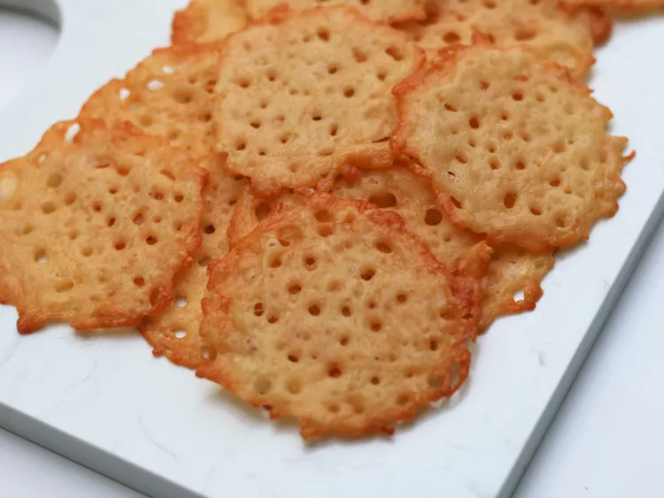

Cheese crisps

Description
Ingredients
- 1 cup shredded Parmesan cheese
Steps
- Preheat the oven to 400 degrees F (200 degrees C). Line a baking sheet with parchment paper or a silicone baking mat.
- Using a tablespoon, create 16 mounds of cheese, about 2 inches in diameter, spaced at least 1 inch apart, on the prepared baking sheet. Press down on the middle of each mound to make them evenly thick.
- Bake in the preheated oven until cheese is completely melted and edges are browned, 4 to 6 minutes. Remove from the oven to cool for 15 minutes. Remove from baking sheet and store at room temperature in an air-tight container for up to 5 days.